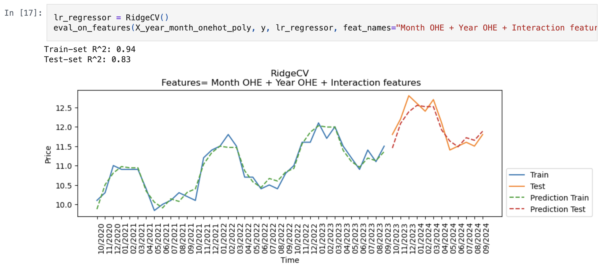
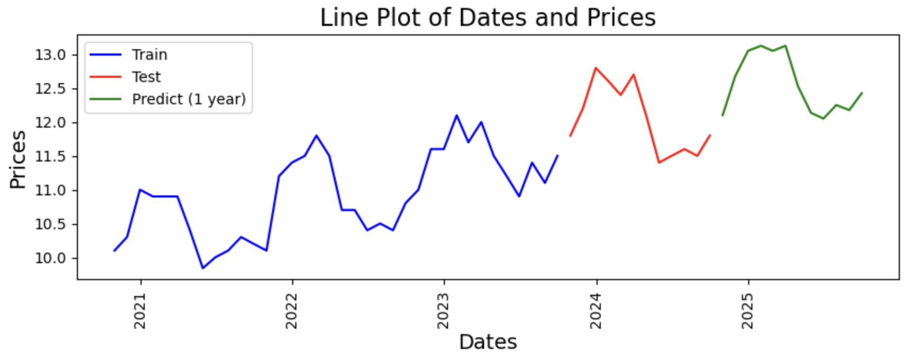
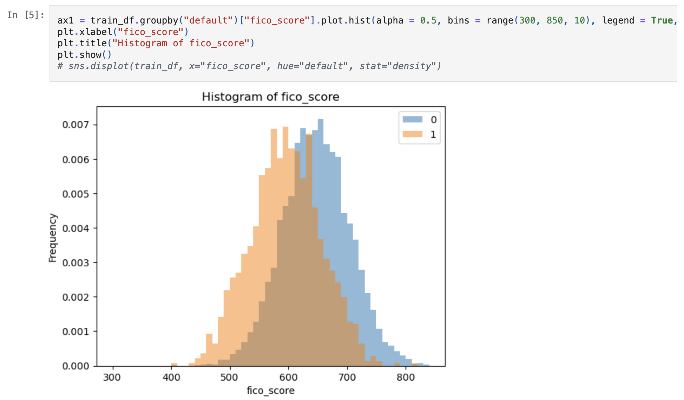
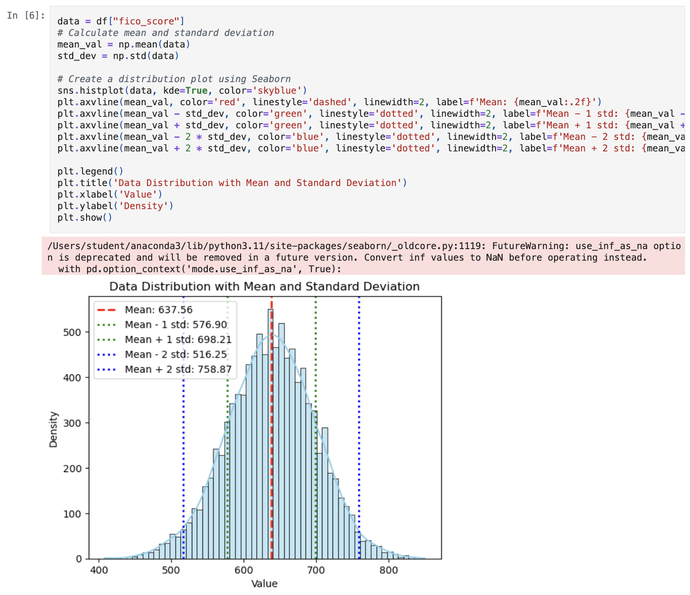
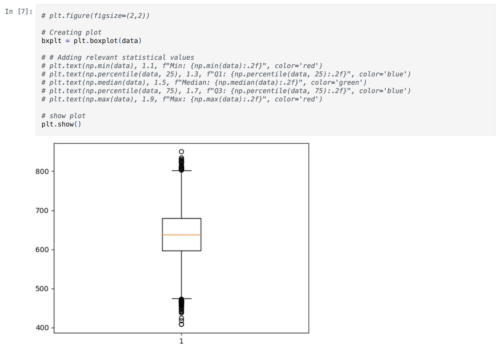
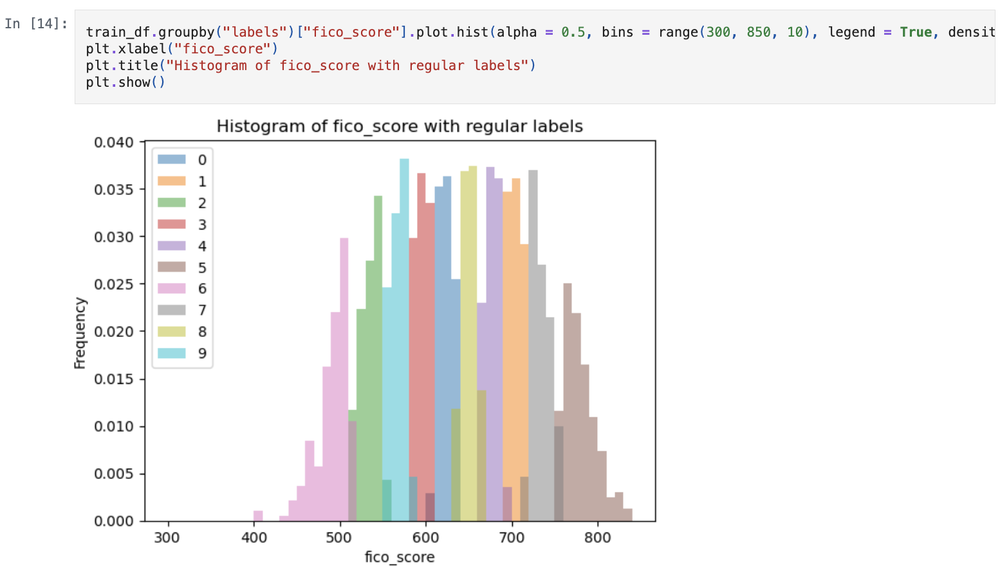

JPMorgan Chase & Co. Quantitative Research Virtual Experience Program
Task 1
- Tested various methods to encode time, such as POSIX time, month and year features and one-hot encoding (OHE) of months and years, along with implementing interaction features and lag features, for the time series analysis of price data, by plotting out their prediction and calculating their \(R^{2}\) score for both the train and test data.
- Utilised a linear model
lr_regressor_nolag()that uses one-hot encoding for months and years along with interaction features to predict future price data, under the assumption that price will increase indefinitely over the years, and will have the same pattern of price changes across months.


Task 2
- Create a prototype pricing model that can go through further validation and testing before being put into production.
- Inputs
- Dictionary of injection and withdrawal dates (in the form %Y-%m-%d) and amounts
- List of prices at which the commodity can be purchased/sold on those dates
- Rate at which the gas can be injected/withdrawn
- Maximum volume that can be stored
- Fixed fees per month for storing
- Output: Predicted contract price
```{python}
def contractprice(injewithdates, pricelist, gasrate, maxvol, storagecost):
"""
Given existing price data and input parameters, produce contract price.
Assumes that injection and withdrawal involve buying and selling of fuel respectively.
Parameters:
-----------
injewithdates: dictionary
Dictionary of injection and withdrawal dates (in the form %Y-%m-%d) and amounts.
Injections are positive, withdrawals are negative.
pricelist: dataframe
Prices at which the commodity can be purchased/sold on those dates.
gasrate: float
Rate at which the gas can be injected/withdrawn.
maxvol: float
Maximum volume that can be stored.
storagecost: float
Fixed fees per month for storing.
Returns:
--------
Contract price.
"""
amount = 0
dict1 = {pd.to_datetime(key): value for key, value in injewithdates.items()}
dict2 = pricelist.to_dict()["Prices"]
sumcosts = {key: None for key in dict1.keys()}
for k, v in dict1.items():
if (v < 0) and (amount >= abs(v)):
amount -= v
elif ((amount + v) <= maxvol):
amount += v
else:
raise Exception("Invalid storage amount")
if k in df_exist_dict:
sumcosts[k] = v * dict2[k]
else:
sumcosts[k] = v * pricepredict([k])["Prices"][0]
display(sumcosts)
finalexchanges = sum(sumcosts.values())
date1 = min(dict1.keys())
date2 = max(dict1.keys())
nummonths = 12 * relativedelta(date2, date1).years + relativedelta(date2, date1).months
totalgasprice = gasrate * sum(abs(number) for number in dict1.values())
total_storagecost = storagecost * nummonths
final_price = finalexchanges - totalgasprice - total_storagecost
return final_price
```Task 3
- Assessed a right-censored loan book using survival analysis models (e.g. Kaplan-Meier Survival Curve) to estimate a customer’s probability of default, and by proxy the expected loss
- Equation: \(EL = PD * (1 - RR) * EAD\)
- \(EL\) = Expected loss
- \(PD\) = Probability of default (
KM_estimate) - \(RR\) = Recovery rate (Provided as 10%)
- \(EAD\) = Exposure at default (Due to lack of provided information, assume this is
total_debt_outstanding)
```{python}
kmf = lifelines.KaplanMeierFitter()
kmf.fit(train_df_surv["years_employed"], train_df_surv["default"]);
pdestimates = kmf.survival_function_.to_dict()["KM_estimate"]
def expectedloss(total_debt_outstanding, years_employed, recovery_rate = 0.1, default = 0, survival_estimates = pdestimates):
"""
Returns expected losses given loan properties.
Parameters:
-----------
total_debt_outstanding: float
Total outstanding debt.
years_employed: int
Number of years individual has been employed.
recovery_rate: float
Amount recovered when a loan defaults.
default: bool
Whether or not the individual has defaulted by this point or not.
Already defaulted individuals will assume probability of 1, non-defaulted individuals will assume survival_estimates.
survival_estimates: dictionary
Dictionary of survival probabilities corresponding to the number of years individual has been employed.
Returns:
--------
Corresponding expected loss given
"""
km_estimate = 1
if default == 0:
km_estimate = survival_estimates.get(years_employed)
expected_loss = km_estimate * (1 - recovery_rate) * total_debt_outstanding
return expected_loss
```Task 4
- Utilised dynamic programming to convert FICO scores into categorical data to predict defaults

- Options considered:
- Use mean and standard distribution as intervals for data.
- Use quartiles and boxplot whiskers.
KMeansto create intervals.


KMeanswas selected due to allowing any number of buckets to be created by the user’s choosing.- None of the labels overlap in terms of specific values.
- Provided example uses 10 buckets
